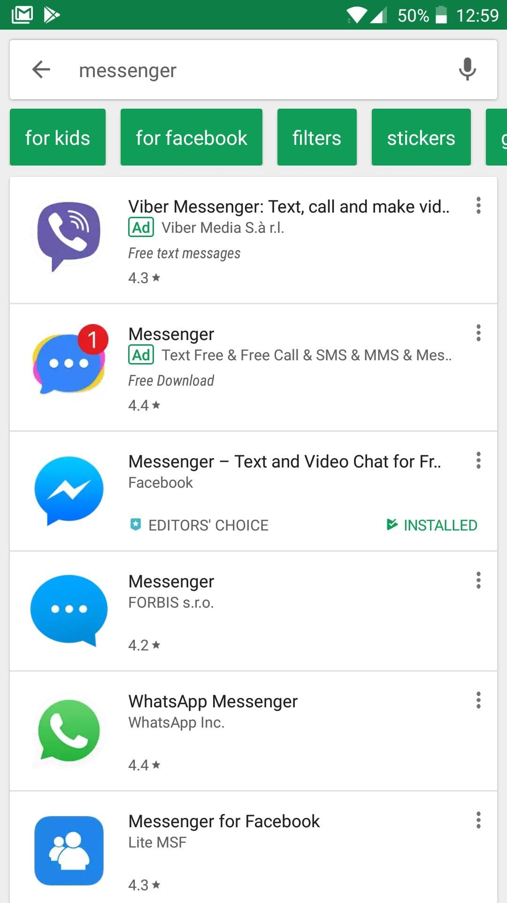

This article provides an introduction to Progressive Web Apps (PWAs), discussing what they are and the advantages they offer over regular web apps.
The term "Progressive Web App" isn't a formal or official name. It's just a shorthand used initially by Google for the concept of creating a flexible, adaptable app using only web technologies.
PWAs are web apps developed using a number of specific technologies and standard patterns to allow them to take advantage of both web and native app features. For example, web apps are more discoverable than native apps; it's a lot easier and faster to visit a website than to install an application, and you can also share web apps by sending a link.
On the other hand, native apps are better integrated with the operating system and therefore offer a more seamless experience for the users. You can install a native app so that it works offline, and users love tapping their icons to easily access their favorite apps, rather than navigating to it using a browser.
PWAs give us the ability to create web apps that can enjoy these same advantages.
It's not a brand new concept—such ideas have been revisited many times on the web platform with various approaches in the past. Progressive Enhancement and responsive design already allow us to build mobile friendly websites.
PWAs, however, provide all this and more without losing any of the existing features that make the web great.
As we hinted at above, PWAs are not created with a single technology. They represent a new philosophy for building web apps, involving some specific patterns, APIs, and other features. It's not that obvious if a web app is a PWA or not from first glance. An app could be considered a PWA when it meets certain requirements, or implements a set of given features: works offline, is installable, is easy to synchronize, can send push notifications, etc.
In addition, there are tools to measure how complete (as a percentage) a web app is, such as Lighthouse. By implementing various technological advantages, we can make an app more progressive, thus ending up with a higher Lighthouse score. But this is only a rough indicator.
There are some key principles a web app should try to observe to be identified as a PWA. It should be:
Offering these features and making use of all the {{anch("Advantages of web applications", "advantages")}} offered by web applications can create a compelling, highly flexible offering for your users and customers.
Absolutely! With a relatively small amount of effort required to implement the core PWA features, the benefits are huge. For example:
There are many success stories of companies trying the PWA route, opting for an enhanced website experience rather than a native app, and seeing significant measurable benefits as a result. The website PWA Stats shares many case studies that indicate these benefits.
The best-known success story is probably that of Flipkart Lite. India's largest e-commerce site was rebuilt as a progressive web app in 2015, which resulted in 70% increase in conversions. The AliExpress PWA has also seen much better results than either the web or the native app, with a 104% increase in conversion rates for new users. Given their profit increase, and the relatively low amount of work required for the conversion of these apps to PWAs, the advantage is clear.
Early stage emerging startups like couponmoto have also started using progressive web apps to drive more consumer engagement, showing that they can help small as well as big companies to (re-)engage users more effectively.
Particularly worth mentioning is the hnpwa.com page—this lists an example implementation of the Hacker News website (instead of the usual TodoMVC app), in which you can see the use of various front-end frameworks.
You can even generate PWAs online using the PWABuilder website.
For service worker and push specific information, be sure to check the Service Worker Cookbook, a collection of recipes using service workers in modern sites.
It's well worth trying out a PWA approach, so you can see for yourself if it works for your app.
A fully-capable progressive web application should provide all of the following advantages to the user.
The eventual aim is that web apps should have better representation in search engines, be easier to expose, catalog and rank, and have metadata usable by browsers to give them special capabilities.
Some of the capabilities have already been enabled on certain web-based platforms by proprietary technologies like Open Graph, which provides a format for specifying similar metadata in the {{Glossary("HTML")}} {{HTMLElement("head")}} block using {{HTMLElement("meta")}} tags.
The relevant web standard here is the Web app manifest, which defines features of an app such as name, icon, splash screen, and theme colors in a {{Glossary("JSON")}}-formatted manifest file. This is for use in contexts such as app listings and device home screens.
A core part of the web app experience is for users to have app icons on their home screen, and be able to tap to open apps into their own native container that feels nicely integrated with the underlying platform.
Modern web apps can have this native app feel via properties set inside the Web app manifest, and via a feature available in modern smartphone browsers called web app installation.
One of the most powerful features of the web is the ability to link to an app at a specific URL without the need for an app store or complex installation process. This is how it has always been.
Modern web apps can work when the network is unreliable, or even non-existent. The basic ideas behind network independence are to be able to:
This is achieved using a combination of technologies: Service Workers to control page requests (for example storing them offline), the Cache API for storing responses to network requests offline (very useful for storing site assets), and client-side data storage technologies such as Web Storage and IndexedDB to store application data offline.
Modern web apps can be developed to provide an excellent experience to fully capable browsers, and an acceptable (although not quite as shiny) experience to less capable browsers. We've been doing this for years with best practices such as progressive enhancement. By using progressive enhancement, PWAs are cross-browser. This means developers should take into account the differences in implementation of some PWA features and technologies between different browser implementations.
One major advantage of native platforms is the ease with which users can be re-engaged by updates and new content, even when they aren't looking at the app or using their devices. Modern web apps can now do this too, using new technologies such as Service Workers for controlling pages, the Web Push API for sending updates straight from server to app via a service worker, and the Notifications API for generating system notifications to help engage users when they're not actively using their web browser.
Responsive web apps use technologies like media queries and viewport to make sure that their UIs will fit any form factor: desktop, mobile, tablet, or whatever comes next.
The web platform provides a secure delivery mechanism that prevents snooping while simultaneously ensuring that content hasn’t been tampered with, as long as you take advantage of {{Glossary("HTTPS")}} and develop your apps with security in mind.
It's also easy for users to ensure that they're installing the right app, because its URL will match your site's domain. This is very different from apps in app stores, which may have a number of similarly-named apps, some of which may even be based on your own site, which only adds to the confusion. Web apps eliminate that confusion and ensure that users get the best possible experience.
As mentioned before, PWAs don't depend on a single API, but rather using various technologies to achieve the goal of delivering the best web experience possible.
The key ingredient required for PWAs is service worker support. Thankfully service workers are now supported on all major browsers on desktop and mobile.
Other features such as Web App Manifest, Push Notifications, and Add to Home Screen functionality have wide support too. Currently, Safari has limited support for Web App Manifest and Add to Home Screen and no support for web push notifications. However, other major browsers support all these features.
Above all you should follow the progressive enhancement rule: use technologies that enhance the appearance and utility of your app when they're available, but still offer the basic functionality of your app when those features are unavailable. Presenting a trusted website with a good performance is a consequence of using these enhancements; this in turn means building web apps which follow better practices. This way everybody will be able to use the app, but those with modern browsers will benefit from PWA features even more.
In this series of articles we will examine the source code of a super simple website that lists information about games submitted to the A-Frame category in the js13kGames 2017 competition. You don't have to think about what the actual content on the website is; the main point is to learn how to use PWA features in your own projects.
You can see this app in action online, and the source code is available on GitHub. We'll be examining this code carefully over the course of this series of articles.
For now, let's move to the second part of this series, where we’ll be looking at the structure of our example app.
{{NextMenu("Web/Progressive_web_apps/App_structure", "Web/Progressive_web_apps")}}